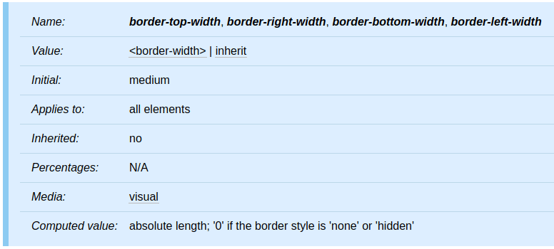
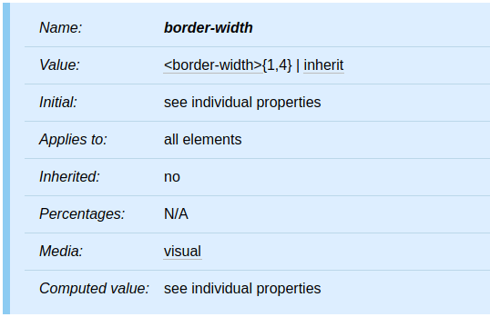
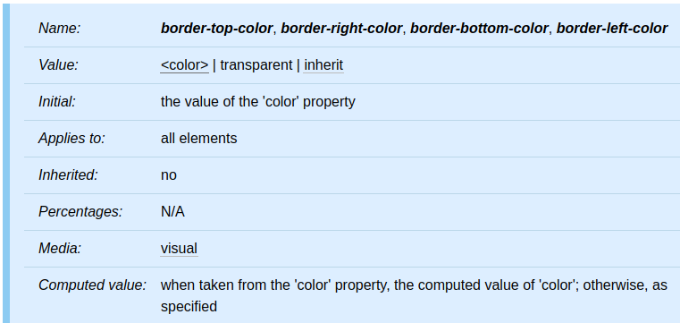
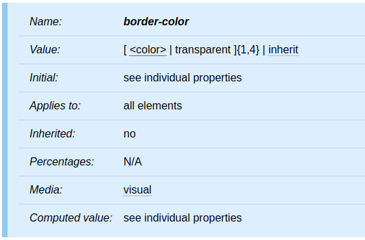
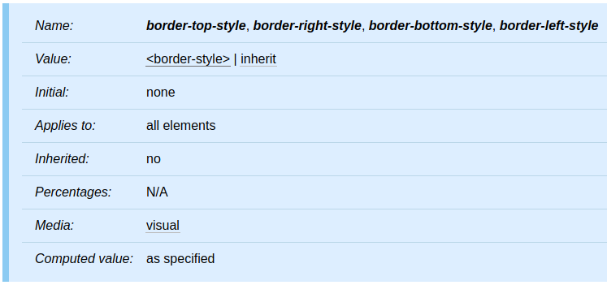
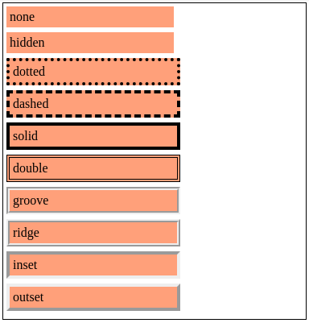

<!DOCTYPE html><html><head><meta charset="utf-8"><title>重新認識 CSS - Box model：border | Titangene Blog</title><meta http-equiv="X-UA-Compatible" content="IE=edge"><meta name="viewport" content="width=device-width,initial-scale=1,maximum-scale=1"><meta name="HandheldFriendly" content="True"><meta name="apple-mobile-web-app-capable" content="yes"><meta name="author" content="Titangene"><link rel="shortcut icon" href="/favicon.ico"><link rel="alternate" href="/atom.xml" title="Titangene Blog"><meta name="description" content="本篇將介紹 CSS 的 Box model 中的 border。"><meta property="og:type" content="article"><meta property="og:title" content="重新認識 CSS - Box model：border"><meta property="og:url" content="https://titangene.github.io/article/css-border.html"><meta property="og:site_name" content="Titangene Blog"><meta property="og:description" content="本篇將介紹 CSS 的 Box model 中的 border。"><meta property="og:locale" content="zh_TW"><meta property="og:image" content="https://titangene.github.io/images/cover/css.png"><meta property="article:published_time" content="2019-09-30T11:30:15.000Z"><meta property="article:modified_time" content="2020-02-09T14:31:10.000Z"><meta property="article:author" content="Titangene"><meta property="article:tag" content="IT 鐵人賽"><meta name="twitter:card" content="summary_large_image"><meta name="twitter:image" content="https://titangene.github.io/images/cover/css.png"><meta name="twitter:creator" content="@titangeneTW"><meta name="twitter:site" content="@titangene_blog"><meta property="fb:admins" content="100001106016019"><meta property="fb:app_id" content="2470546159839111"><meta property="og:image:width" content="1200"><meta property="og:image:height" content="630"><meta name="google-site-verification" content="AaJ39L7h-nWwJjXJMhAMtXSF6H6BUgGWXC80kYvLic8"><link rel="stylesheet" href="//fonts.googleapis.com/css?family=Inconsolata|Titillium+Web"><link href="https://fonts.googleapis.com/css?family=Source+Code+Pro&display=swap" rel="stylesheet"><link rel="stylesheet" href="//use.fontawesome.com/releases/v5.7.0/css/all.css" integrity="sha384-lZN37f5QGtY3VHgisS14W3ExzMWZxybE1SJSEsQp9S+oqd12jhcu+A56Ebc1zFSJ" crossorigin="anonymous"><link rel="stylesheet" href="https://unpkg.com/gitalk/dist/gitalk.css"><link rel="stylesheet" href="/style.css"><script async src="https://www.googletagmanager.com/gtag/js?id=UA-129758206-1"></script><script>!function(a){function n(){dataLayer.push(arguments)}a.dataLayer=a.dataLayer||[],n("js",new Date),n("config","UA-129758206-1")}(window)</script><script>function setLoadingBarProgress(e){document.getElementById("loading-bar").style.width=e+"%"}</script><meta name="generator" content="Hexo 4.2.0"><link rel="alternate" href="/atom.xml" title="Titangene Blog" type="application/atom+xml"></head></html><body><div id="loading-bar-wrapper"><div id="loading-bar"></div></div><script>setLoadingBarProgress(20)</script><header class="l_header"><div class="wrapper"><div class="nav-main container container--flex"><a class="logo flat-box" href="/">Titangene Blog</a><div class="menu"><ul class="h-list"><li><a class="flat-box nav-home" href="/">Home</a></li><li><a class="flat-box nav-archives" href="/archives">Archives</a></li></ul><div class="underline"></div></div><div class="m_search"><form name="searchform" class="form u-search-form"><input type="text" class="input u-search-input" placeholder="Search"> <i class="fas fa-search"></i></form></div><ul class="switcher h-list"><li class="s-search"><a class="fas fa-search" href="javascript:void(0)"></a></li><li class="s-menu"><a class="fas fa-bars" href="javascript:void(0)"></a></li></ul></div><div class="nav-sub container container--flex"><a class="logo flat-box" href="/">Titangene Blog</a><ul class="switcher h-list"><li class="s-comment"><a class="far fa-comment-alt" href="javascript:void(0)"></a></li><li class="s-top"><a class="fas fa-arrow-up" href="javascript:void(0)"></a></li><li class="s-toc"><a class="fas fa-list-ol" href="javascript:void(0)"></a></li></ul></div></div></header><aside class="menu-phone"><nav><a href="/" class="nav-home nav">Home </a><a href="/archives" class="nav-archives nav">Archives</a></nav></aside><script>setLoadingBarProgress(40)</script><div class="l_body"><div class="container clearfix"><div class="l_main"><article id="post-css-border" class="post white-box article-type-post" itemscope itemprop="blogPost"><section class="meta"><h2 class="title"><a href="/article/css-border.html">重新認識 CSS - Box model：border</a></h2><span class="post-time"><span class="post-meta-item-icon"><i class="fa fa-calendar"></i> </span><span class="post-meta-item-text">發表於</span> <time title="建立時間：2019-09-30 19:30:15" itemprop="dateCreated datePublished" datetime="2019-09-30T19:30:15+08:00">2019-09-30 </time><span class="post-meta-divider">|</span> <span class="post-meta-item-icon"><i class="fa fa-calendar-check"></i> </span><span class="post-meta-item-text">更新於</span> <time title="修改時間：2020-02-09 22:31:10" itemprop="dateModified" datetime="2020-02-09T22:31:10+08:00">2020-02-09</time></span> <span class="comments-count"><span class="post-meta-divider">|</span> <span class="post-meta-item-icon"><i class="fas fa-comment"></i> </span><a href="https://titangene.github.io/article/css-border.html#comments" class="article-comment-count">留言</a></span><div class="post-category"><span class="post-meta-item-icon"><i class="fa fa-folder"></i> </span><span class="post-meta-item-text">分類於</span> <span itemprop="about" itemscope itemtype="http://schema.org/Thing"><a href="/categories/css/" itemprop="url" rel="index"><span itemprop="name">CSS</span></a></span></div></section><section class="toc-wrapper"><h3>目錄</h3><ol class="toc"><li class="toc-item toc-level-2"><a class="toc-link" href="#前言"><span class="toc-text">前言</span></a></li><li class="toc-item toc-level-2"><a class="toc-link" href="#Border-width"><span class="toc-text">Border width</span></a></li><li class="toc-item toc-level-2"><a class="toc-link" href="#Border-color"><span class="toc-text">Border color</span></a></li><li class="toc-item toc-level-2"><a class="toc-link" href="#Border-style"><span class="toc-text">Border style</span></a></li><li class="toc-item toc-level-2"><a class="toc-link" href="#四個方位的-border-設定"><span class="toc-text">四個方位的 border 設定</span></a></li></ol></section><section class="article typo"><div class="article-entry" itemprop="articleBody"><p></p><p>本篇將介紹 CSS 的 Box model 中的 border。</p><a id="more"></a><h2 id="前言"><a class="header-anchor" href="#前言"></a>前言</h2><blockquote><p>「重新認識 CSS」這個系列名稱的由來就如其名，我想要重新認識它。雖然以前就有學過 CSS，但這次想從 CSS Spec 中學到最原始的定義和內容，更加了解 CSS 的原理，讓我在切版的時候可以更加確定自己在做什麼，我踩到的雷只是因為我不夠了解它才會炸開。</p><p>在這 30 天的內容中，會將 Spec 內看到的資料整理成這個系列，也希望正在學 CSS 的各位可以更加了解它。另外我也會同時將文章發至我的 Blog，如果想直接看文內的程式碼 Demo 畫面，可以到我的 Blog 來看 😃。</p><p>本文同步發表於 iT 邦幫忙：<a href="https://ithelp.ithome.com.tw/articles/10223019" target="_blank" rel="noopener">重新認識 CSS - Box model：border</a></p><p>「重新認識 CSS」系列文章發文於：</p><ul><li><a href="https://ithelp.ithome.com.tw/users/20117586/ironman/2617" target="_blank" rel="noopener">iT 邦幫忙</a></li><li><a href="https://titangene.github.io/tags/it-%E9%90%B5%E4%BA%BA%E8%B3%BD/">Titangene Blog</a></li></ul></blockquote><h2 id="Border-width"><a class="header-anchor" href="#Border-width"></a>Border width</h2><p>border width 屬性指定 border area 的寬度。</p><p></p><p><code>border-top-width</code>、<code>border-right-width</code>、<code>border-bottom-width</code>、<code>border-left-width</code> 屬性：</p><ul><li>initial value：<code>medium</code></li><li>computed value：absolute length；如果 border 樣式為 <code>none</code> 或 <code>hidden</code>，則為 <code>0</code></li></ul><p><code>border-width</code> 是下列屬性的簡寫屬性：</p><ul><li><code>border-top-width</code></li><li><code>border-right-width</code></li><li><code>border-bottom-width</code></li><li><code>border-left-width</code></li></ul><p></p><p>此屬性引用的 <code>&lt;border-width&gt;</code> value type 可在以下幾個當中選一個使用：</p><ul><li><code>thin</code></li><li><code>medium</code></li><li><code>thick</code></li><li><code>&lt;length&gt;</code>：指定明確的屬性值，border width 不能使用負數</li></ul><p>前三個值的解譯 (interpretation) 方式取決於 UA。但是，必須滿足以下關係：<code>thin</code> &lt;= <code>medium</code> &lt;= <code>thick</code>。</p><p>例如：</p><figure class="highlight css"><table><tr><td class="gutter"><pre><span class="line">1</span><br><span class="line">2</span><br><span class="line">3</span><br><span class="line">4</span><br></pre></td><td class="code"><pre><code class="hljs css"><span class="hljs-selector-tag">h1</span> &#123; <span class="hljs-attribute">border-width</span>: thin; &#125;               <span class="hljs-comment">/* thin thin thin thin */</span><br><span class="hljs-selector-tag">h1</span> &#123; <span class="hljs-attribute">border-width</span>: thin thick; &#125;         <span class="hljs-comment">/* thin thick thin thick */</span><br><span class="hljs-selector-tag">h1</span> &#123; <span class="hljs-attribute">border-width</span>: thin thick medium; &#125;  <span class="hljs-comment">/* thin thick medium thick */</span><br><span class="hljs-selector-tag">h1</span> &#123; <span class="hljs-attribute">border-width</span>: thin thick medium thin; &#125;  <span class="hljs-comment">/* thin thick medium thin */</span><br></code></pre></td></tr></table></figure><h2 id="Border-color"><a class="header-anchor" href="#Border-color"></a>Border color</h2><p>border color 屬性指定 box 的 border 的顏色。</p><p></p><p><code>border-top-color</code>、<code>border-right-color</code>、<code>border-bottom-color</code>、<code>border-left-color</code> 屬性：</p><ul><li>initial value：<code>color</code> 屬性值</li><li>computed value：<code>color</code> 屬性的 <a href="https://www.w3.org/TR/CSS22/cascade.html#computed-value" target="_blank" rel="noopener">computed value</a>，否則使用指定的顏色</li></ul><p><code>border-color</code> 是下列屬性的簡寫屬性：</p><ul><li><code>border-top-color</code></li><li><code>border-right-color</code></li><li><code>border-bottom-color</code></li><li><code>border-left-color</code></li></ul><p></p><p><code>border-color</code> 屬性設定四個 border 的顏色。value 具有以下含義：</p><ul><li><code>&lt;color&gt;</code>：指定顏色值</li><li><code>transparent</code>：透明的 border (就算有設定 border 寬度也會是透明的)</li></ul><p>如果未使用 <code>border</code> 屬性指定元素的 border 顏色，則 UA 必須使用元素的 <code>color</code> 屬性的值作為 border 顏色的 <a href="https://www.w3.org/TR/CSS22/cascade.html#computed-value" target="_blank" rel="noopener">computed value</a>。</p><p>例如：實線 (solid) 的 border：</p><figure class="highlight css"><table><tr><td class="gutter"><pre><span class="line">1</span><br><span class="line">2</span><br><span class="line">3</span><br><span class="line">4</span><br><span class="line">5</span><br></pre></td><td class="code"><pre><code class="hljs css"><span class="hljs-selector-tag">p</span> &#123; <br>  <span class="hljs-attribute">color</span>: black; <br>  <span class="hljs-attribute">background</span>: white; <br>  <span class="hljs-attribute">border</span>: solid;<br>&#125;<br></code></pre></td></tr></table></figure><h2 id="Border-style"><a class="header-anchor" href="#Border-style"></a>Border style</h2><p>border 樣式屬性指定 box 的 border 的 line 樣式。</p><p></p><p><code>border-top-style</code>、<code>border-right-style</code>、<code>border-bottom-style</code>、<code>border-left-style</code> 屬性：</p><ul><li>initial value：<code>none</code>，也就是除非有設定 border 樣式，否則不會顯示任何 border</li><li>computed value：<a href="https://www.w3.org/TR/CSS22/cascade.html#specified-value" target="_blank" rel="noopener">specified value</a></li></ul><p><code>border-style</code> 是下列屬性的簡寫屬性：</p><ul><li><code>border-top-style</code></li><li><code>border-right-style</code></li><li><code>border-bottom-style</code></li><li><code>border-left-style</code></li></ul><p></p><p>此屬性引用的 <code>&lt;border-width&gt;</code> value type 可在以下幾個當中選一個使用：<code>none</code>、<code>hidden</code>、<code>dotted</code>、<code>dashed</code>、<code>solid</code>、<code>double</code>、<code>groove</code>、<code>ridge</code>、<code>inset</code>、<code>outset</code>。</p><p>樣式如下圖：</p><p>Demo：<a href="https://codepen.io/titangene/pen/poobYwJ" target="_blank" rel="noopener">Codepen 連結</a></p><p></p><iframe height="496" style="width:100%" scrolling="no" title="border style" src="https://codepen.io/titangene/embed/poobYwJ?height=496&theme-id=dark&default-tab=css,result" frameborder="no" allowtransparency="true" allowfullscreen>See the Pen <a href="https://codepen.io/titangene/pen/poobYwJ" target="_blank" rel="noopener">border style</a> by Titangene (<a href="https://codepen.io/titangene" target="_blank" rel="noopener">@titangene</a>) on <a href="https://codepen.io" target="_blank" rel="noopener">CodePen</a>.</iframe><h2 id="四個方位的-border-設定"><a class="header-anchor" href="#四個方位的-border-設定"></a>四個方位的 border 設定</h2><p>就如之前所說，<code>border-width</code>、<code>border-color</code>、<code>border-style</code> 和 <code>border</code> 屬性都可以設定 1 至 4 個值，分別代表：</p><figure class="highlight plain"><table><tr><td class="gutter"><pre><span class="line">1</span><br><span class="line">2</span><br><span class="line">3</span><br><span class="line">4</span><br></pre></td><td class="code"><pre><code class="hljs plain">屬性: 上下左右;<br>屬性: 上下 左右;<br>屬性: 上 左右 下;<br>屬性: 上 右 下 左;<br></code></pre></td></tr></table></figure><p>例如：</p><ul><li>水平 border 為 <code>solid</code></li><li>垂直 border 為 <code>dotted</code></li></ul><figure class="highlight css"><table><tr><td class="gutter"><pre><span class="line">1</span><br></pre></td><td class="code"><pre><code class="hljs css"><span class="hljs-selector-tag">h1</span> &#123; <span class="hljs-attribute">border-style</span>: solid dotted; &#125;<br></code></pre></td></tr></table></figure><blockquote><p>詳情可參考我之前寫的「<a href="https://titangene.github.io/article/css-box-model.html">重新認識 CSS - Box model (前傳)</a>」，內有使用 1 至 4 個值的實際範例，因此在此不再追述。</p></blockquote><p>資料來源：</p><ul><li><a href="https://www.w3.org/TR/CSS22/box.html#margin-properties" target="_blank" rel="noopener">CSS 2.2 - 8. Box model</a></li><li><a href="https://www.w3.org/TR/css-backgrounds-3/#borders" target="_blank" rel="noopener">CSS Backgrounds and Borders Module Level 3 - 4. Borders</a></li></ul></div><div class="article-tags tags"><a href="/tags/it-%E9%90%B5%E4%BA%BA%E8%B3%BD/" title="IT 鐵人賽">IT 鐵人賽</a></div></section><div class="article-share-links"><span>分享：</span> <a class="fab fa-facebook-f" title="Facebook" target="_blank" href="javascript:window.open('https://www.facebook.com/sharer.php?u=https%3A%2F%2Ftitangene.github.io%2Farticle%2Fcss-border.html', 'Share on Facebook','width=600, height=600')"></a> <a class="fab fa-twitter" title="Twitter" target="_blank" href="javascript:window.open('https://twitter.com/share?url=https%3A%2F%2Ftitangene.github.io%2Farticle%2Fcss-border.html&amp;text=重新認識 CSS - Box model：border&amp;hashtags=IT鐵人賽&amp;via=titangene_blog', 'Share on Twitter','width=600, height=260')"></a> <a class="fab fa-linkedin-in" title="Linkedin" target="_blank" href="javascript:window.open('https://www.linkedin.com/shareArticle?mini=true&amp;url=https%3A%2F%2Ftitangene.github.io%2Farticle%2Fcss-border.html&amp;title=重新認識 CSS - Box model：border', 'Share on Linkedin','width=600, height=600')"></a> <a class="fab fa-facebook-messenger" title="Facebook Messenger" target="_blank" href="javascript:window.open('http://www.facebook.com/dialog/send?app_id=2470546159839111&amp;link=https%3A%2F%2Ftitangene.github.io%2Farticle%2Fcss-border.html&amp;display=popup&amp;redirect_uri=https%3A%2F%2Fwww.facebook.com%2Fdialog%2Freturn%2Fclose%23_%3D_', 'Send in Messenger','width=600, height=600')"></a> <a class="fab fa-telegram-plane" href="https://telegram.me/share/url?url=https%3A%2F%2Ftitangene.github.io%2Farticle%2Fcss-border.html&text=重新認識 CSS - Box model：border" target="_blank"></a></div><nav id="article-nav"><a href="/article/css-box-model.html" id="article-nav-prev" class="article-nav-link-wrap" title="重新認識 CSS - Box model" rel="prev"><strong class="article-nav-caption">Prev</strong><p class="article-nav-title">重新認識 CSS - Box model</p><i class="fas fa-angle-left"></i> </a><a href="/article/css-box-sizing.html" id="article-nav-next" class="article-nav-link-wrap" title="重新認識 CSS - box-sizing" rel="next"><strong class="article-nav-caption">Next</strong><p class="article-nav-title">重新認識 CSS - box-sizing</p><i class="fas fa-angle-right"></i></a></nav><section id="list_related_posts"><h2>相關文章</h2><ul class="related-posts"><li class="related-posts-item"><a class="related-posts-link" href="/article/css-visibility.html">重新認識 CSS - visibility</a><div class="related-posts-item-abstract">本篇將介紹 CSS 的 visibility 屬性。前言「重新認識 CSS」這個系列名稱的由來就如其名，我想要重新認識它。雖然以前就有學過 CSS，但這次想從 CSS Spec 中學到最原始的定義和內容，更加了解 CSS</div></li><li class="related-posts-item"><a class="related-posts-link" href="/article/css-attribute-value.html">重新認識 CSS - CSS 屬性值</a><div class="related-posts-item-abstract">在介紹各種 CSS 屬性之前，先來介紹屬性值，CSS 的屬性值分為：整數和實數、Lengths (長度)、百分比、URLs 和 URIs、Counters (計數器)、顏色、字串。前言「重新認識 CSS」這個系列名稱的由</div></li><li class="related-posts-item"><a class="related-posts-link" href="/article/css-box-generation-block-box.html">重新認識 CSS - Visual formatting model：Box generation (block box)</a><div class="related-posts-item-abstract">在 visual formatting model 中，document tree 中的每個元素都會根據 box model 生成 0 個或多個 box，box 分為兩種不同的 type：block 和 inline。本</div></li><li class="related-posts-item"><a class="related-posts-link" href="/article/css-attribute-selector.html">重新認識 CSS - Attribute selector (屬性選擇器)</a><div class="related-posts-item-abstract">Selector (選擇器) 可用來選擇 HTML 和 XML 文件中的節點，並將樣式屬性綁定到文件 (HTML 和 XML) 中的元素上。當選擇器與某元素 match 的時候，就可以對選到的元素進行 CSS 樣式設定。</div></li><li class="related-posts-item"><a class="related-posts-link" href="/article/css-box-generation-inline-box.html">重新認識 CSS - Visual formatting model：Box generation (inline box)</a><div class="related-posts-item-abstract">在 visual formatting model 中，document tree 中的每個元素都會根據 box model 生成 0 個或多個 box，box 分為兩種不同的 type：block 和 inline。本</div></li><li class="related-posts-item"><a class="related-posts-link" href="/article/css-cascading-and-specificity.html">重新認識 CSS - Cascading & Specificity</a><div class="related-posts-item-abstract">CSS 可以在同份文件上使用多個 style sheet 來設定文件的樣式。如果你在不同 style sheet 內對同一個元素或屬性設定值時，就會 CSS 會透過 cascading 這個特性來解決這個衝突。本篇將介紹</div></li></ul></section><section class="comments" id="comments"><h2>討論區</h2><div id="gitalk-container"></div><div id="disqus_thread" style="margin-top:20px"><noscript>Please enable JavaScript to view the <a href="https://disqus.com/?ref_noscript" target="_blank" rel="noopener">comments powered by Disqus.</a></noscript></div></section></article><script>window.subData={title:"重新認識 CSS - Box model：border",tools:!0}</script></div><aside class="l_side"><section class="m_widget about"><div class="avatar-section"><style>.avatar-cover{background:url(/images/avatar_cover.jpg) 0 10%/cover no-repeat}</style><div class="avatar-cover"></div></div><div class="header">Titangene</div><div class="content"><div class="desc">利用 blog 紀錄學習歷程</div></div><div class="content"><meta itemprop="url" content="https://titangene.github.io"><div class="social-wrapper"><a itemprop="sameAs" href="https://github.com/titangene" class="social github" target="_blank" rel="external"><span class="fab fa-github-alt"></span> </a><a itemprop="sameAs" href="https://www.facebook.com/titangene.tw" class="social facebook" target="_blank" rel="external"><span class="fab fa-facebook-square"></span> </a><a itemprop="sameAs" href="https://www.instagram.com/titangene/" class="social instagram" target="_blank" rel="external"><span class="fab fa-instagram"></span> </a><a itemprop="sameAs" href="https://www.flickr.com/photos/titangene" class="social flickr" target="_blank" rel="external"><span class="fab fa-flickr"></span> </a><a itemprop="sameAs" href="/atom.xml" class="social rss" target="_blank" rel="external"><span class="fas fa-rss"></span></a></div></div></section><section class="m_widget facebook_page"><div class="fb-page" data-href="https://www.facebook.com/titangene.blog/" data-width="250" data-small-header="false" data-adapt-container-width="false" data-hide-cover="false" data-show-facepile="true"><blockquote cite="https://www.facebook.com/titangene.blog/" class="fb-xfbml-parse-ignore"><p><a href="https://www.facebook.com/titangene.blog/" class="social facebook" target="_blank"><span class="fab fa-facebook-square"></span></a></p><p><a href="https://www.facebook.com/titangene.blog/" target="_blank" rel="noopener">Titangene Blog</a></p><p>Loading...</p></blockquote></div></section><section class="m_widget recent"><div class="header">Recents</div><div class="content"><ul class="entry"><li><a itemprop="url" class="flat-box" href="/article/jest-build-test-env.html"><time>2020-05-24</time><div class="name">Jest：建置測試環境 (包含 Babel)</div></a></li><li><a itemprop="url" class="flat-box" href="/article/sass-import-rule.html"><time>2020-05-17</time><div class="name">Sass：@import rule</div></a></li><li><a itemprop="url" class="flat-box" href="/article/sass-use-rule.html"><time>2020-05-10</time><div class="name">Sass：@use rule</div></a></li><li><a itemprop="url" class="flat-box" href="/article/dart-sass.html"><time>2020-05-03</time><div class="name">Dart Sass 介紹 (使用與安裝)</div></a></li><li><a itemprop="url" class="flat-box" href="/article/npm-and-yarn-cheatsheet.html"><time>2020-04-26</time><div class="name">npm / Yarn 套件管理器指令比對 cheatsheet</div></a></li></ul></div></section></aside><script>setLoadingBarProgress(60)</script></div></div><footer id="footer" class="clearfix"><div class="social-wrapper"><a href="https://github.com/titangene" class="social github" target="_blank" rel="external"><span class="fab fa-github-alt"></span> </a><a href="https://www.facebook.com/titangene.tw" class="social facebook" target="_blank" rel="external"><span class="fab fa-facebook-square"></span> </a><a href="https://www.instagram.com/titangene/" class="social instagram" target="_blank" rel="external"><span class="fab fa-instagram"></span> </a><a href="https://www.flickr.com/photos/titangene" class="social flickr" target="_blank" rel="external"><span class="fab fa-flickr"></span> </a><a href="/atom.xml" class="social rss" target="_blank" rel="external"><span class="fas fa-rss"></span></a></div><div>© 2018 - 2020 <span itemprop="copyrightHolder">Titangene</span></div><div>Powered by <a href="https://hexo.io/" target="_blank" class="codename" rel="external noopener">Hexo</a> - Theme <a href="https://github.com/stkevintan/hexo-theme-material-flow" target="_blank" class="codename" rel="external noopener">MaterialFlow</a></div><div><a rel="license noopener" href="http://creativecommons.org/licenses/by-nc-sa/4.0/" target="_blank" rel="external noopener"></a></div></footer><script>setLoadingBarProgress(80)</script><script src="//cdnjs.cloudflare.com/ajax/libs/jquery/2.1.4/jquery.min.js"></script><script src="https://cdnjs.cloudflare.com/ajax/libs/clipboard.js/2.0.0/clipboard.min.js"></script><script src="https://unpkg.com/masonry-layout@4/dist/masonry.pkgd.min.js"></script><script src="https://unpkg.com/gitalk/dist/gitalk.min.js"></script><script src="/js/jquery.fitvids.js"></script><script>var SEARCH_SERVICE="hexo",ROOT="/";ROOT.endsWith("/")||(ROOT+="/")</script><script src="/js/search.js"></script><script src="/js/app.js"></script><script src="/js/clipboard-use.js"></script><script type="text/javascript">var gitalk=new Gitalk({clientID:"dd1684f31ee17e25c22b",clientSecret:"4b51bb4a5996b04d58821a6e3da8558f23da4cdf",id:window.location.pathname,repo:"hexo-blog",owner:"titangene",admin:"titangene",distractionFreeMode:"true"});gitalk.render("gitalk-container")</script><script>var disqus_shortname="titangene-blog",disqus_config=function(){this.page.url="https://titangene.github.io/article/css-border.html",this.page.identifier="article/css-border.html",this.page.title="重新認識 CSS - Box model：border"};!function(){var t=document.createElement("script");t.async=!0,t.src="//"+disqus_shortname+".disqus.com/embed.js",t.setAttribute("data-timestamp",""+new Date),(document.head||document.body).appendChild(t)}()</script><script id="dsq-count-scr" src="https://titangene-blog.disqus.com/count.js" async></script><div id="fb-root"></div><script>window.fbAsyncInit=function(){FB.init({appId:"2470546159839111",autoLogAppEvents:!0,xfbml:!0,version:"v2.11"}),FB.AppEvents.logPageView()},function(e,n,t){var o,s=e.getElementsByTagName(n)[0];e.getElementById(t)||((o=e.createElement(n)).id=t,o.src="//connect.facebook.net/zh_TW/sdk.js",s.parentNode.insertBefore(o,s))}(document,"script","facebook-jssdk")</script><script>setLoadingBarProgress(100)</script></body>